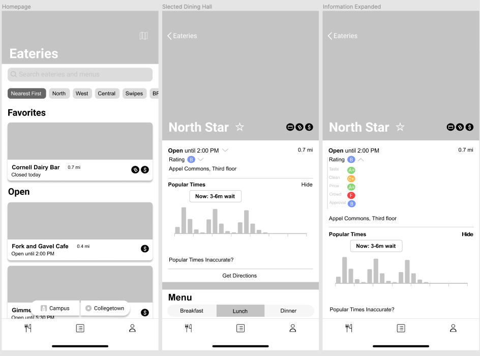
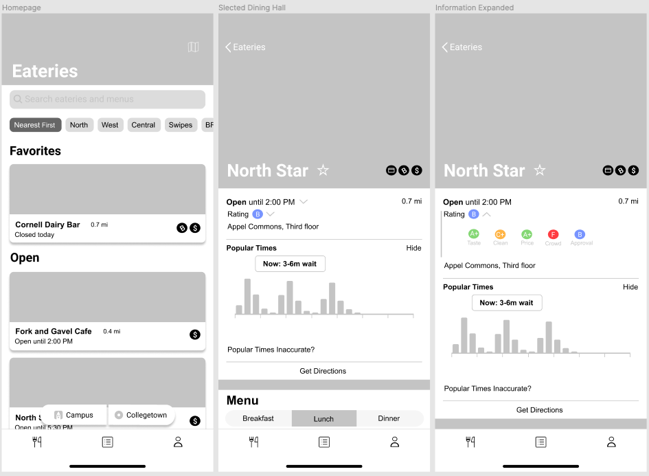
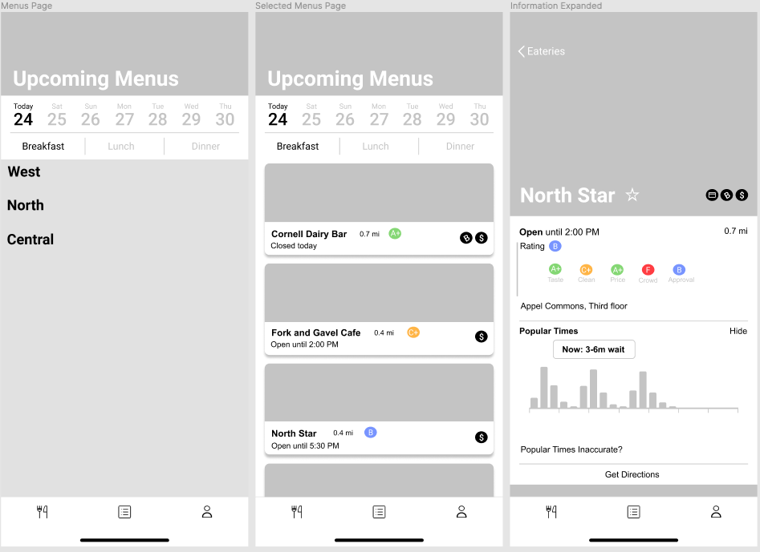
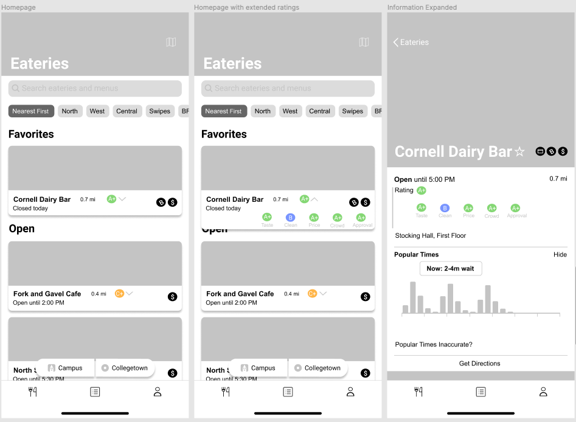
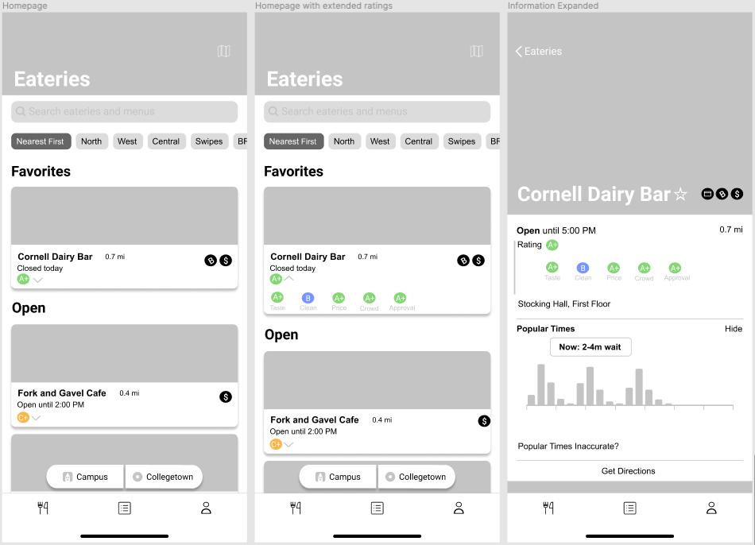
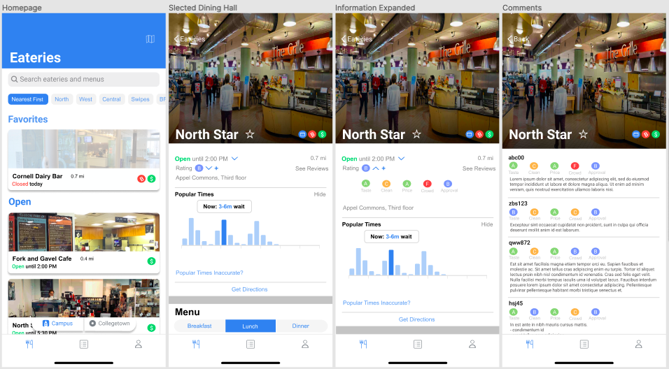

Eatery
Can users learn more with feedback?
Overview
A feature that allows users to share and view feedback regarding Cornell University's dining halls.
Roles
UI Designer
UX Designer
UX Researcher
Time Frame
June 2020 -
August 2020
Introduction
Eatery is the most common app used among Cornell University students to help navigate campus living. Thousands of students use the app daily to discover new dining halls, skim through numerous menu options, and organize their next dinner “date” with a group of friends. Though, when a user discovers a dining hall he or she is not familiar with, the user is greeted with a cloud of uncertainty.
Eatery does not allow users to share and review feedback submitted by other students regarding dining halls.
If students want to find out if a dining hall appears clean, has tasty food, has speedy service, and has a favorable reputation among most of the Cornell population, they would have to inconveniently scout for new peers and ask them for their opinions about different dining halls. This current process is limiting and highly time consuming.
Others would spend various minutes tapping back and forth between the Eatery app and a web browser to first find the name of a Cornell dining hall, and then hope to find at least a few trustworthy reviews through a Google search.
User Research
To better understand the strain of finding a sufficient amount of perspectives and information about dining halls within the Eatery app, I interviewed multiple users, asking them to describe their experiences.
Trends found through the interviews include:
- Users primarily view only the home (default) icon.
- Users mostly use the app for on-campus dining.
- Users tend to find information about a dining hall through an outside app, experience, or word of mouth.
Insights found through the interviews include:
- Users desire cleanliness, uncrowded dining areas, and tasty food.
- Users highly value the opinion and feedback of others when deciding where to dine.
- Users often consider distance and hours of operation to be the most influential factors in determining where to dine.
- Users want to easily distinguish special notes about food dishes (where or not the meals or themed; allergens) through the app.
- Users view finding adequate amounts of information about dining before choosing to dine is time consuming.
People Problem:
When users want to find a dining hall to enjoy, they want to know how the dining option is perceived by others before visiting, but they cannot do that well because:
- User only hear opinions of the people they personally know. (Opinions do not come from a diverse group of people.)
- Finding details about dining halls is time consuming.
- If friends have not informed a user about a dining hall, they do not have enough information about it to make the decision to dine in there.
Market Research
Other platforms are solving the problem of informing users about places to eat:
- Yelp: shows rating, number of reviews, affordability symbols, images posted by the restaurant and by customers, displays customer reviews alongside profile pictures
- Google reviews: shows rating, indicates affordability using $ symbols, shows number of reviews, displays customer reviews alongside profile pictures
Brainstorming Session
Figuring Out Which Feature To Implement
After brainstorming, three opportunity areas were found:
- Symbolize: How might we symbolically represent users' opinions of a dining hall?
- Experience: How might we allow users to communicate their thoughts regarding dining hall in a concise manner?
- Organize: How might we sum and display the average of users' opinions about a particular dining hall?
Enabling Users To Quickly And Sufficiently Review Feedback
The chosen focus area is "Organize-Average."
Initial Approaches
Testing the Different Tactics
After weighing the pros, cons, and requirements of each of the three initial approaches, the chosen tactic is: “Grade Rating.”
The goal of the feature is to allow users to rate multiple aspects of a dining hall, and display the average overall rating for the dining hall, followed by average ratings for each aspect (such as cleanliness) of a select dining hall.
How It Solves The People Problem:
- Users can view a wide variety of diverse experiences and opinions about different dining halls.
- Users are able to easily see a summary of how most users perceive a dining hall (by viewing the grade-average icons), allowing users to save time.
- Users are able to see others’ explanations for their perspective about different dining halls, enabling them to gather more information to use to make informed decisions on where to dine.
Determining the Entry Point
How might we integrate visual elements into the current layout of the app to allow users submit ratings, view ratings, and view users' explanations for their given ratings? What steps should users follow to do so?
Five Entry Point flows explorations are as follows:
Entry Point One
Entry Point Two
Entry Point Three
Entry Point Four
Entry Point Five
Final Revision
After considering results from user testing, the final flow of the feedback feature was determined. The interaction has one main entry point: in the description section of a dining hall’s information page. Users are able to view the average grade for a dining hall, determined by the mean of the scores (submitted by users using the “+” icon of this feature) based on taste, cleanliness, prices, crowdedness, and personal approval. The user is able to click the dropdown arrow icon to see a breakdown of how the dining hall received its average score. To further understand why a dining hall received its ratings, the user is able to click “See Reviews” to read other users’ explanations for their given scores.
Conclusion
Eatery has a well earned and high reputation across Cornell University’s campus. However, it lacks the resources needed to provide users with useful information needed to make better informed decisions about where to - and where not to - dine. A “Graded Review” feature will enable users to share their personal experiences at multiple dining halls, helping others in the Cornell community become aware of various pros and cons of dining halls on campus. This feature will help users feel more confident in their dining options, bring more awareness to underrated dining halls, and inspire dining halls to improve their quality of service.